This project is intended to implement image warping and mosaicing, finding homographies between two images and using them to rectify images into varying
perspectives, warp images, and stitch together mosaics/panoramas using various images with the same center of projection. Hope you enjoy!
Part A1: Shooting the images
Please find below two sets of images with projective transforms, or images with a fixed center of projection. This was done by keeping the camera eye lens
fixed while rotating to take the various images.
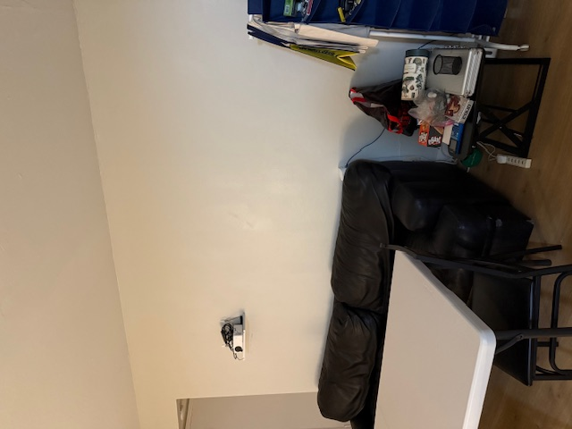
Set 1 (Sofa): Left Image
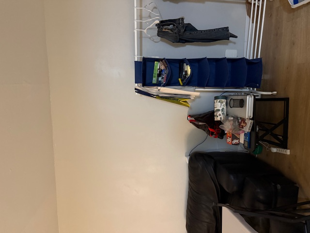
Set 1 (Sofa): Middle Image
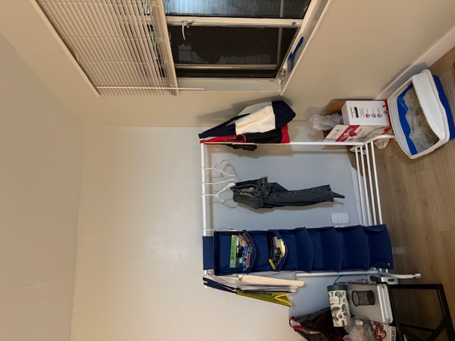
Set 1 (Sofa): Right Image
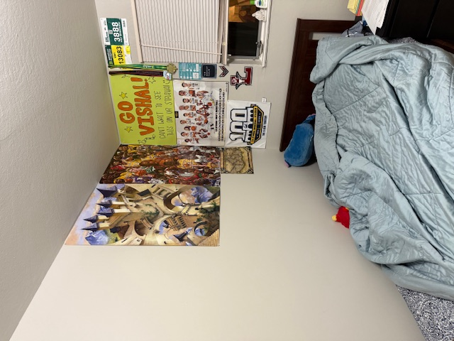
Set 2 (Room): Left Image
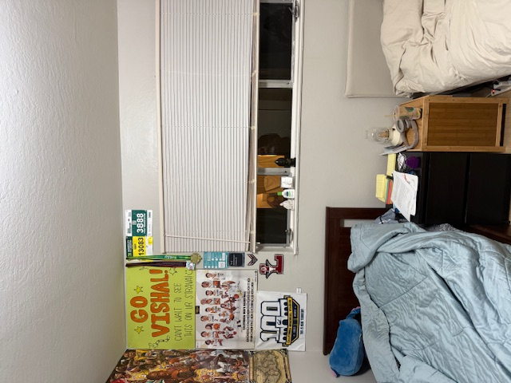
Set 2 (Room): Middle Image
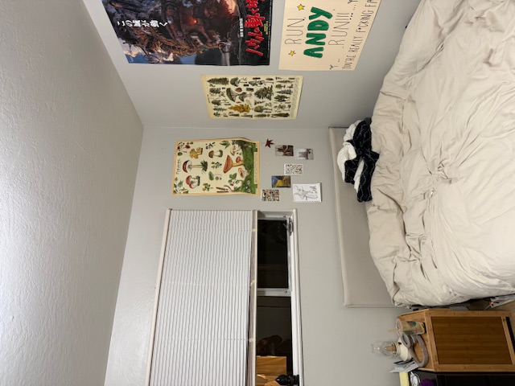
Set 2 (Room): Right Image
Part A2: Recovering Homographies
I computed im1_points and im2_points for the homography by using Matplotlib's ginput function and established point correspondences between two images. One
such point correspondence is shown below. While more than 4 point correspondences are recommended to compute a good homography between the two images, I
established only 2 point correspondences for the purpose of this specific exercise in order to make the systems of equations explained soon more visible
given that the number of equations is (2 * # of correspondences).
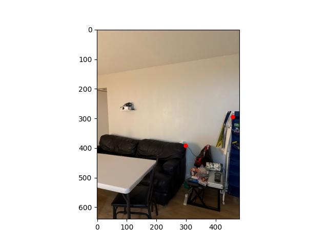
Point correspondences for the left image of sofa set
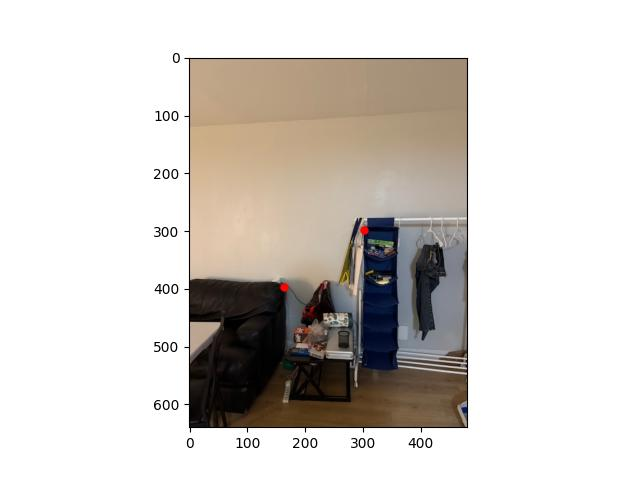
Point correspondences for the right image of sofa set
I then used these point correspondences to calculate the systems of equations for the homography. For each point correspondence $(x, y) -> (x', y')$ we can
form the following relation:
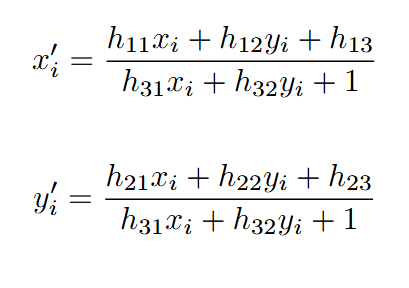
Relation between point correspondences
We can rearrange these to form the following equations and then formulate the A and b matrices for the systems of equations as follows:
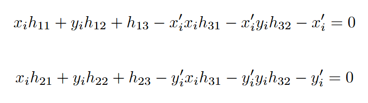
Systems of equations
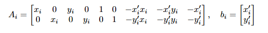
A and b matrices
Where i is for each point correspondence (explaining the relation between number of equations and number of point correspondences.
We then perform least squares to find the values in h (equation is Ah = b). The 8 values in h are the first 8 values in the 3x3 homography matrix H (the
ninth value or H_33 is 1). We can see the systems of equations (matrices A and b) and the homography matrix H for the sofa point correspondences below. I
have casted the values of A and b for ease of reading, though they are in reality floats.
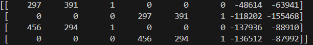
A for sofa systems
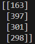
b for sofa systems
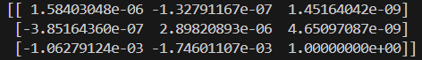
Homography matrix H for sofa systems
Part 1.3: DoG Filter
Please find all the relevant images for Gaussian blur and Derivative of Gaussians (DoG) implementations below:
Gaussian blur applied to cameramanGaussian blurred cameraman convolved with DxGaussian blurred cameraman convolved with DyGaussian blurred cameraman gradient magnitude imageGaussian blurred cameraman binarized gradient magnitude imagel 25% thresholdCameraman convolved with DoG x-directionCameraman convolved with DoG y-directionCameraman gradient magnitude image for DoGCameraman binarized gradient magnitude image for DoG; 25% threshold
There is significantly less noise for the binarized edge detector image with threshold 25% when convolved with a Gaussian whether through Gaussian blur or
derivative of Gaussians (DoG). There are also noticeably more edges of the cameraman and scenery that the binarized gradient magnitude image shows,
indicating better edge detection.
Part 2.1: Image Sharpening
The unsharp mask filter essentially adds more of the higher frequencies to the original image to “sharpen” the original image. The process for calculating
these frequencies is done by initially blurring the original image by a Gaussian low-pass filter but consolidates the lower frequencies of the image in
a “blur” effect and then subtracting the original image by the blurred image in order to result only the high-frequency pixels of the image. This
high-frequency image is then multiplied by a hyperparameter ⍺, where bigger values of ⍺ would enable greater “sharpening” of the original image. This
resultant image is then added to the original image in order to create the sharpened image. This whole process can be represented as f + ⍺(f - f * g)
where f is the original image, g is the Gaussian kernel, and * represents convolution. This expression can be changed as f + ⍺(f - f * g) =
(1 + ⍺)f - ⍺(f * g) = f * ((1 + ⍺)e - ⍺g). The last expression represents convolving the original image by the unsharp mask filter or (1 + ⍺)e - ⍺g, where
e is the unit impulse. This convolution allows our images to be sharpened as seen below.
Blurred Taj MahalSharpened Taj MahalOriginal CatBlurred CatRe-Sharpened Cat
Part 2.2: Hybrid Images
Please find the images in the hybrid creation process for Derek and Nutmeg below, from alignment, filtered images, and hybrid. We chose cutoff frequencies
of 7 for the low-pass image and 4 for the high-pass image. These were determined through trial and error, though I knew that the high-pass frequency should
be lower than the low-pass frequency to ensure proper hybrid image creation because it allows blending of the higher frequencies in the low-pass image with
the lower frequencies of the high-pass image.
Original DerekOriginal NutmegAligned and High-Pass Filtered DerekAligned and Low-Pass Filtered NutmegHybrid Derek and Nutmeg
Also, find the log magnitude of the Fourier transforms for the original, filtered, and hybrid Derek and Nutmeg below, providing a thorough frequency analysis
verifying the result.
Original Derek Fourier TransformOriginal Nutmeg Fourier TransformAligned and High-Pass Filtered Derek Fourier TransformAligned and Low-Pass Filtered Nutmeg Fourier TransformHybrid Derek and Nutmeg Fourier Transform
Finally, please find the original and hybrid images for two of my choice:
Fish ImageSubmarine ImageFish and Submarine HybridHappy Face ImageSad Face ImageHappy and Sad Face Hybrid
Part 2.3: Gaussian and Laplacian Stacks
Please find the images of the Laplacian stack and originals in line with the Figure 3.42 of the Szelski paper below. The rows are Laplacian depth 0,
Laplacian depth 2, Laplacian depth 4 (essentially the Gaussian blur from Gaussian stack since depth of the stack is 5), and the originals respectively. The
columns are apple, orange, and hybrid oraple respectively.
(a)(b)(c)(d)(e)(f)(g)(h)(i)(j)(k)(l)
In order to blend the images, I used a left-right linear mask represented as a Gaussian stack. The mask blended together the images at the seam in the center
using np.linspace() which enabled a smooth transition for blending rather than a visible seam.
Part 2.4: Multi-Resolution Blending
Please find below a clearer oraple for this part specifically with a lower depth Laplacian stack (depth=3). The oraple at depth=5 is a bit blurry due to
the compounding value of sigma heightening Gaussian blur.
Original AppleOriginal OrangeOraple
Finally, please find below the two blended images I created. For the eye-sand blend, I utilized a circular mask, functionally similar to the linear
mask but instead having the seam be a circle with a pre-determined radius hyperparameter.
Original AlexOriginal AmyAlex Amy BlendOriginal EyeOriginal SandEye in the Sand